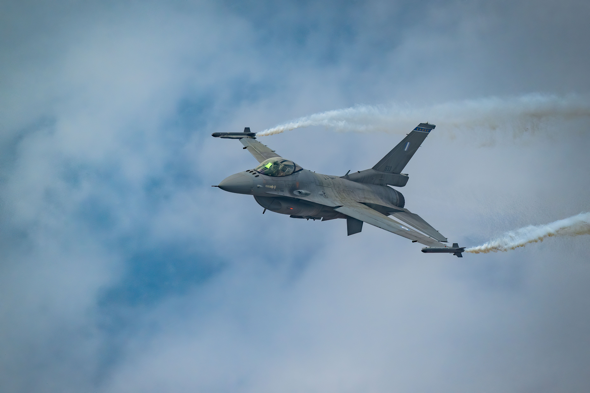

The General Dynamics F-16 Fighting Falcon (commonly referred to by its pilots as the "Viper") is a single-engine, supersonic multirole fighter aircraft originally developed by General Dynamics for the United States Air Force (USAF). Conceived as a lightweight air-superiority day fighter under the Lightweight Fighter (LWF) program, it quickly evolved into an all-weather, highly versatile multirole strike aircraft.
Since its first official flight in 1974 and operational introduction in 1979, over 4,600 airframes have been built, making it the most produced Western jet fighter of its generation. Operating across dozens of international air forces, the F-16 remains a cornerstone of modern military aviation due to continuous technological upgrades like the Block 70/72 Viper standard
The world’s premier 4th-generation multirole fighter jet. Engineered for ultimate agility, dogfighting dominance, and precision multi-domain strike capability.
Radar & Sensor Suite
•
AESA Radar: SABR APG-83 Active Electronically Scanned Array.
•
Targeting Pods: AN/AAQ-33 Sniper XR & LITENING targeting systems.
•
EW Suite: Digital Radar Warning Receiver (RWR) & integrated jammers.
The F-16 introduced groundbreaking innovations in aerodynamics, control systems, and pilot situational awareness:
Relaxed Static Stability (RSS) & Fly-By-Wire (FBW): The F-16 was the first fighter deliberately designed to be aerodynamically unstable. Its quad-redundant electronic Fly-By-Wire control system constantly makes micro-adjustments via computer logic to keep the jet stable while offering unprecedented maneuverability and instantaneous turn rates.
Frameless Bubble Canopy: Eliminates metal bow frames, offering 360-degree unobstructed visibility to give pilots a decisive tactical advantage in visual air combat.
Reclined Ejection Seat: The ACES II zero-zero ejection seat is tilted backwards at 30 degrees (compared to standard 13–15 degrees), helping pilots withstand sustained high G-forces (up to 9g) by reducing blood pooling.
Side-Stick Controller: Instead of a traditional center stick, the control stick is mounted on the right console. It relies on force-sensing inputs to facilitate precise handling during intense G-load maneuvers.
Blended Wing-Body & Belly Intake: The fuselage and wings form a single aerodynamic lifting body. The ventral chin air intake ensures stable engine airflow even at extreme high angles of attack (AoA).
Armament -Payload
- Internal Cannon: 1x 20mm M61A1 Vulcan 6-barrel rotary cannon (511 rounds).
- •
Air-to-Air: AIM-120 AMRAAM, AIM-9X Sidewinder on 9 hardpoints.
- •
Air-to-Ground: JDAM, AGM-88 HARM, AGM-65 Maverick, Small Diameter Bombs.